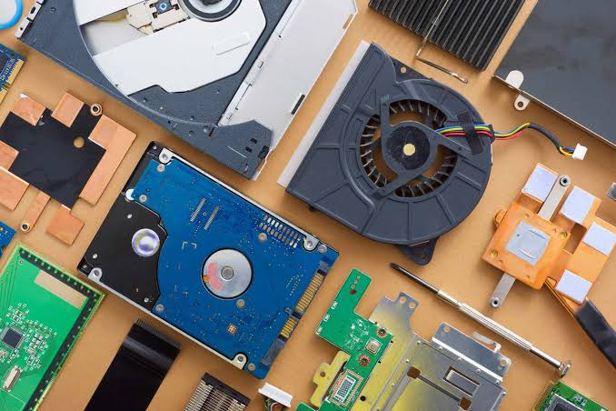

Exploring technology, programming and the future of computing.
Artificial Intelligence has become one of the most important areas of modern technology. AI systems can process large amounts of information and help people solve complex problems.
Students and developers are increasingly learning about machine learning and generative AI to understand how these technologies can be used in real-world applications.
Read Full ArticlePython is a popular programming language because its syntax is relatively easy to understand. It is widely used in software development, data science and artificial intelligence.
Learning Python can help beginners develop problem-solving and programming skills before moving on to more advanced technologies.
Read Full Article
Computer hardware continues to improve as manufacturers develop faster processors, graphics cards and storage technologies. These improvements help computers handle increasingly demanding applications.
Modern hardware is especially important for gaming, artificial intelligence and professional computing.
Read Full ArticleTechSphere is written by technology enthusiasts who enjoy discussing programming, computers, artificial intelligence and new developments in the technology industry.